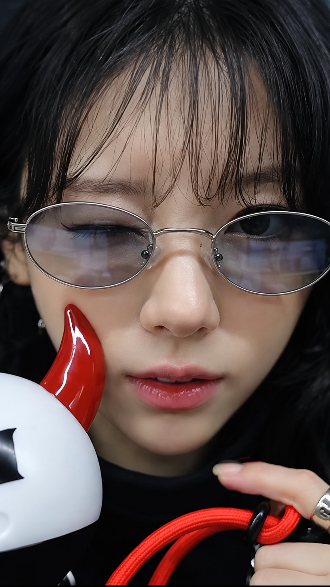
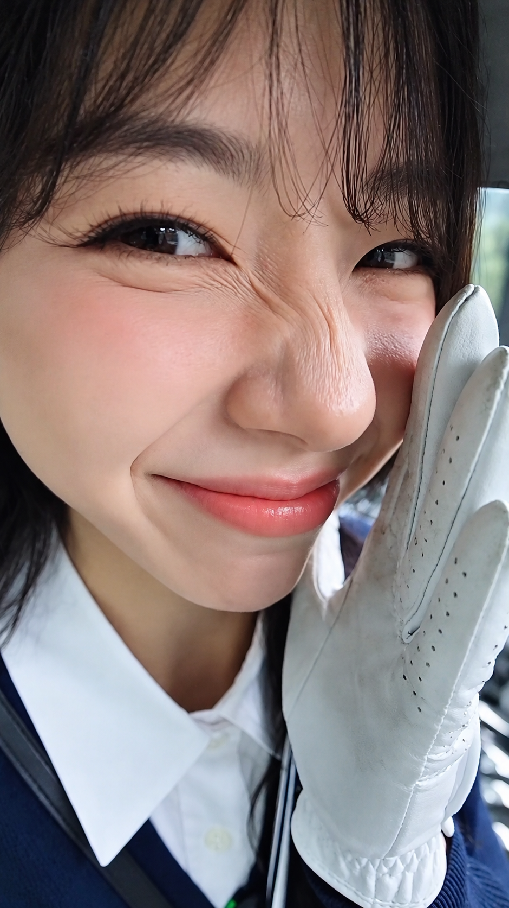

AI CREATOR / APP BUILDER
Gue Neng_AI.
Ini ruang karya gue.
Dari cerita visual sampai aplikasi.
Dibikin dengan AI, dikasih karakter sendiri.
✳ Dibangun dari HP. Dibentuk oleh rasa ingin tahu.

A LITTLE CURIOUS. ALWAYS CREATING.APLIKASI BUATAN NENG_AI
Pilih ruang
buat ide kamu.
APLIKASI
Buka aplikasi ↗Preview visual · Jelajahi aplikasi untuk tampilan lengkap.
GENERATIVE AI / SELECTED MEDIA
Dari imajinasi,
menjadi adegan.
Eksperimen visual, cerita, dan kemungkinan baru lewat AI.
Lihat TikTok Neng ↗NENG_AI / MOTION STUDIESa story
in the making.VIDEO MENYUSUL · TEMPATNYA SUDAH SIAP
in the making.VIDEO MENYUSUL · TEMPATNYA SUDAH SIAP
KARYA 01 / 04

made with curiosity.DI BALIK NENG_AI
Layar kecil.
Ruang ide yang luas.
Gue mengeksplorasi generative AI lewat video dan konten, sekaligus membangun Neng-app, Aster Assistant, dan Aster Gateway.
Proses pengembangan gue berjalan dari HP Android: mencoba, menguji hasilnya langsung, lalu memperbaiki detailnya.
Neng_AI Creator / Builder / Explorer
A CONVERSATION, WITH NENG.
Yuk, ngobrol.
Tanya tentang karya, aplikasi, atau proses kreatif Neng_AI.
Neng akan menyapa saat Live tersambung. Kamu juga bisa ngobrol lewat teks.